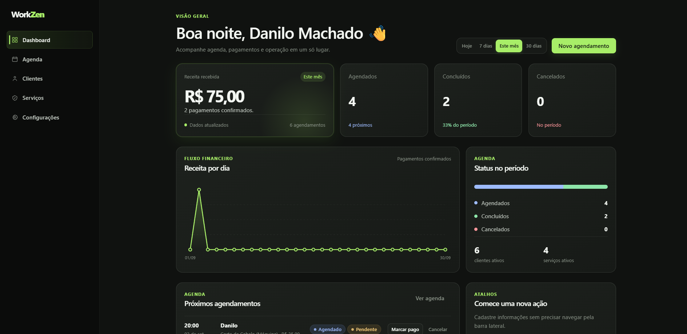

01

Workzen
MVP de SaaS para profissionais que atendem por horário. Centraliza clientes, serviços, agenda e acompanhamento de pagamentos em uma interface web responsiva, com API própria e banco PostgreSQL.
// Desenvolvedor de Software
Estudante de Engenharia de Software e técnico em Desenvolvimento de Sistemas, hoje aprofundando front-end (HTML, CSS, JavaScript) e Inteligência Artificial aplicada a projetos reais. Gosto de aprender construindo — colocar a mão na massa, do planejamento até a entrega, é como consolido o que estudo na prática.

Construo interfaces web do zero, estruturando marcação semântica e estilos responsivos que funcionam em qualquer tela.
Controle de versão e lógica de programação são a base de tudo que construo, do primeiro commit ao deploy.
Uso IA generativa (Claude, ChatGPT) no meu fluxo de desenvolvimento do dia a dia — desde arquitetura de projetos até integração de APIs de IA em produtos reais, como o Redify.
Universidade Veiga de Almeida (UVA) · Barra da Tijuca, RJ
Bolsista ProUni
UniCesumar
Estou buscando minha primeira oportunidade em desenvolvimento. Se você gostou do meu trabalho, vamos conversar.